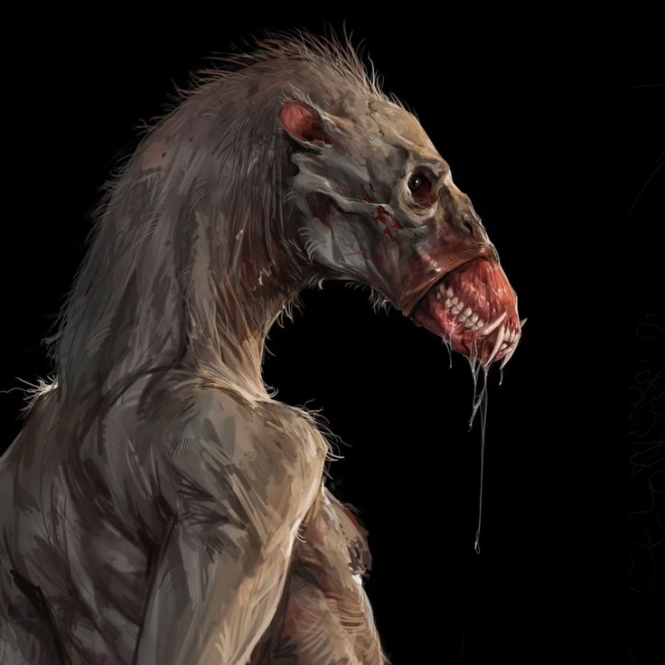

Impressores

Os Impressores são criaturas que possuem a habilidade de copiar a aparência humana ou de aberrados com
precisão assustadora. Eles se infiltram na sociedade disfarçados, convivendo entre os seres com o único
propósito de se alimentar delas. nascem de estranhos ovos orgânicos que se desenvolvem nas paredes úmidas de
cavernas profundas e locais abandonados, longe da luz e da presença de consciência.
Esses seres têm a capacidade de mutacionar seus corpos conforme sua vontade. Inicialmente, suas
transformações são limitadas a formas grotescas de carne, mas com o tempo e experiência, alguns Impressores
evoluem a ponto de moldar partes do corpo em armas naturais, como lâminas afiadas, garras e até asas
membranosas. No entanto, essa habilidade vem com um custo elevado: para manter suas mutações e sobreviver,
eles precisam consumir carne humana ou de outros Impressores, o que os torna ainda mais perigosos e
instáveis.
São exclusivamente criaturas que vivem no Brasil, oque dificultava a vivência de aberrados e humanos no país
antes dos acontecimentos de 2001.
Antes dos indígenas começarem suas tocas, os próprios Impressores e Troncos Abertos viviam sua rivalidade no
país.
Impressores
- Resistência+4
- Fuga+7
- Agilidade+7
- Mental−4
- Área−6
- Interpretação−4